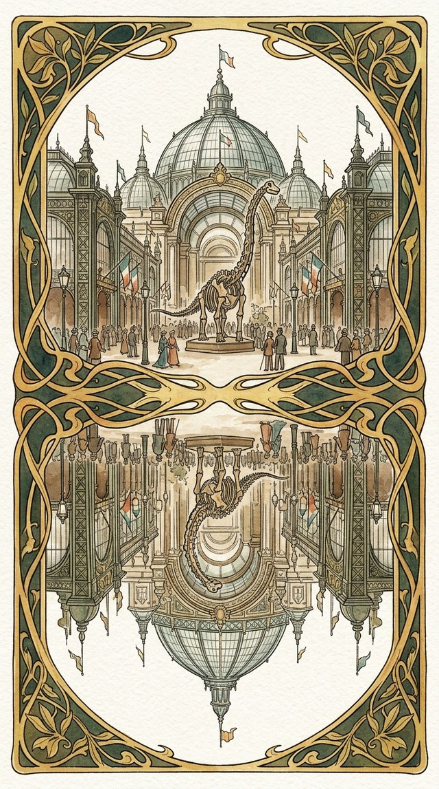

Cuatro eras
Triásico, Jurásico, Cretácico y Pleistoceno. Cada era tiene su laboratorio de clonación, su color y su símbolo.

Ludens Docere presenta
Es el año 19XX. Las naciones del mundo se reúnen en una Exposición Universal donde, por primera vez, el público verá con vida a los habitantes de eras pasadas. Tú diriges un pabellón: elige bien a tus ejemplares… y fíjate en lo que exhiben tus vecinos.
Triásico, Jurásico, Cretácico y Pleistoceno. Cada era tiene su laboratorio de clonación, su color y su símbolo.
Dinosaurios, mamíferos, plantas y otros animales prehistóricos: pterosaurios, reptiles marinos, cocodrilomorfos y más.
Cada ejemplar es una especie real, ilustrada en acuarela dentro de su ecosistema, con datos revisados y un dato curioso.
Cada persona recibe 8 cartas boca abajo y las coloca en una cuadrícula de 2 × 4: son las 8 salas de su pabellón. En el centro, la Galería de Laboratorios muestra cartas boca arriba, y el resto forma la pila de Encargos experimentales. Cada quien recibe además una Concesión de Pabellón, su objetivo secreto… que en realidad está a la vista.
A) Adquirir en la Galería: toma una carta de la Galería, cámbiala por una de tus salas y deja en la Galería la carta que sacaste.
B) Encargo experimental: roba a ciegas de los Encargos, cámbiala por una sala y manda la carta que sacaste al fondo de la pila.
Si la sala que cambiaste ya estaba boca arriba, revela otra. Siempre terminas el turno con una sala más a la vista.
Los pabellones están lado a lado en la gran avenida. Tu columna izquierda puntúa según el pabellón de tu vecina de la izquierda; la columna derecha, según el de tu vecino de la derecha; las dos columnas centrales, según el tuyo.
Cuando todos los pabellones tienen sus 8 salas boca arriba, se inaugura la Exposición. Cada carta suma puntos según su tipo, se agregan los bonos de las Concesiones y gana el pabellón con la mejor calificación del jurado.
Las reglas completas, con los modos Duelo y por equipos, están en el manual de reglas (PDF).
Los 60 ejemplares de la Exposición. Toca una ilustración para abrir su ficha.
Expansión
Ninguna Exposición Universal estaba completa sin su gabinete de curiosidades. Siete criaturas tan extrañas que la ciencia tardó décadas en entenderlas, y a veces las reconstruyó al revés. Solo llegan por Encargo experimental, no cuentan como ninguna era (salvo Atopodentatus, del Triásico) y cada una trae un poder propio. El pabellón con el mayor Índice de rareza gana el Premio del Público.
Cartas: imprime las hojas de frente y, al reverso de cada una, la página de dorso que indica su pie de página.
Para el cuadernillo: imprime en hoja carta a doble cara, volteando por el borde corto. Dobla las hojas juntas por la mitad y engrapa en el centro.